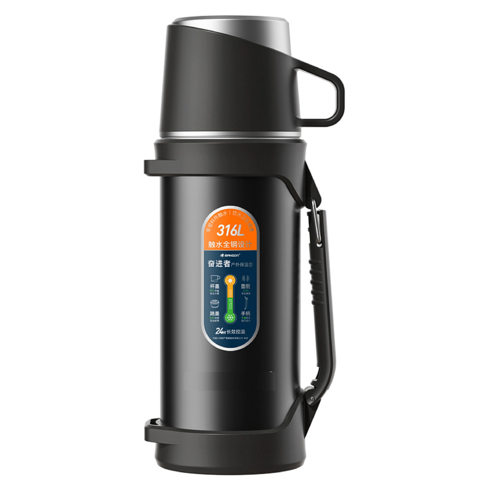
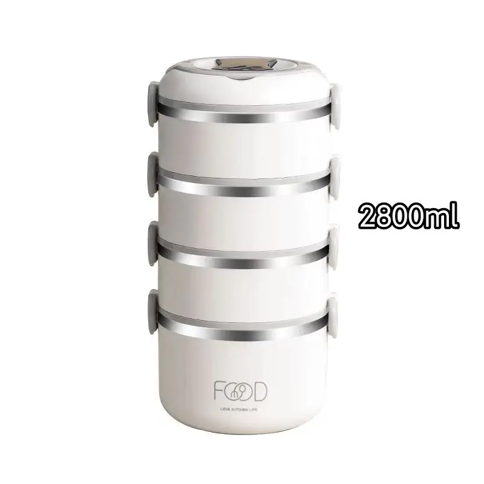

Every other generative-engine-optimization tactic fails if the AI engines can't read your site. This guide covers the AI crawler roster, how robots.txt gates citations, the single most common GEO mistake manufacturers make, and a safe configuration plus a verification checklist you can run today.
Generative-engine optimization lives or dies on a boring file most marketers never open: robots.txt. You can publish the most citable, fact-dense, schema-rich content on the web, but if ChatGPT, Gemini, Perplexity or Claude are told not to read it, none of that work is ever quoted. For manufacturers who spent years perfecting classic SEO, the trap is especially sharp — they allow Googlebot and quietly block the AI tokens, then wonder why AI assistants have never heard of them.
Think of GEO as a pipeline with a single on/off valve at the front. The stages after it — clean entities, structured data, factual content, llms.txt, digital PR — only matter if the AI engine can first fetch and parse your pages. Block the crawler and the rest of the pipeline is dead air. That is why crawl access belongs at the very top of any GEO checklist, ahead of schema and content.

Four crawlers cover the large majority of English-language AI answer surfaces. Each is identified by a user-agent token you can address individually in robots.txt.
| Token | Engine / surface | What it feeds |
|---|---|---|
| GPTBot | OpenAI | ChatGPT browsing and cited answers |
| Google-Extended | Gemini and AI Overviews (separate from Googlebot) | |
| PerplexityBot | Perplexity | Perplexity's cited, source-linked answers |
| ClaudeBot | Anthropic | Claude's web-aware responses |
Other tokens exist (Applebot-Extended, Omgilibot, Bytespider, CCBot and more), but the four above are the priority set for a B2B manufacturer targeting buyers who ask AI tools where to source drinkware. Address them explicitly so a config change is deliberate, not accidental.
robots.txt is a set of rules keyed to user-agent. The two directives that matter here are simple:
* means "all crawlers."Disallow: / blocks the entire site for that agent; Disallow: with nothing after it allows everything.The critical behavior: a path that is not mentioned is allowed by default. The mistake almost everyone makes is adding a rule (often a copied SEO snippet) that Disallows one of the AI tokens, then forgetting it is there. Because the default for an unmentioned token is "allow," the silent failure mode is a single explicit Disallow line quietly shutting the door.
The most common manufacturer GEO failure looks like this in robots.txt:
Disallow: lines for GPTBot, Google-Extended, PerplexityBot or ClaudeBot.For a public B2B catalog, the goal is to allow the AI tokens while keeping any admin or internal paths closed. A minimal, safe configuration:
User-agent: GPTBot
Allow: /
User-agent: Google-Extended
Allow: /
User-agent: PerplexityBot
Allow: /
User-agent: ClaudeBot
Allow: /
User-agent: *
Disallow: /admin/
Disallow: /cgi-bin/
# Public catalog, blog and product pages remain crawlable by all agentsIf you prefer a single blanket rule, User-agent: * with no Disallow also permits the AI tokens — but the explicit per-token version above is safer because it documents intent and survives a later edit that might otherwise block everything.
robots.txt is necessary but not sufficient. Three more things quietly stop AI engines even when the file looks correct:

Don't trust the file — test it. A short checklist:
| Check | How | Good signal |
|---|---|---|
| robots.txt has no AI Disallow | Open /robots.txt | All four tokens Allowed or absent |
| Page returns 200 to AI UA | Fetch with each token's user-agent | 200, not 401/403 |
| HTML is fully rendered | View source of the fetched page | Facts present without JS |
| Crawler appears in logs | Inspect server/CDN logs | GPTBot/Google-Extended hits recorded |
Fetching with a specific user-agent is straightforward — for example, requesting a page while identifying as GPTBot or Google-Extended and confirming you get the same full HTML a browser would. If the response is a challenge page or an empty shell, the access problem is real even though robots.txt is clean.
robots.txt is not a set-and-forget file. Re-check it whenever you change CDN, security plugins, or SEO tools, because those are the systems that tend to rewrite it. A simple cadence:
Pair this access work with the content and schema tactics covered in the other GEO guides on this blog — crawl access gets you in the room, but citable, factual, well-structured content is what gets you quoted.
Will allowing AI crawlers hurt my Google search ranking?
No. Google's regular web indexer is Googlebot; Google-Extended is the separate token for Gemini and AI Overviews. Allowing Google-Extended does not change how Googlebot ranks your pages. The two are controlled independently, so you can keep classic SEO intact while opting into AI visibility.
Is it safe to let AI crawlers read my product specs and prices?
For a B2B manufacturer the answer is usually yes — your public catalog, specs and prices are already indexed by Googlebot and visible to competitors. Letting AI engines read the same public content is what makes them cite you. Keep truly sensitive material (internal docs, customer lists) off the public site entirely rather than trying to hide it behind robots.txt.
How do I check whether my site is actually crawlable by AI bots?
Start with your robots.txt: confirm none of the AI tokens are Disallowed. Then fetch key pages with each crawler's user-agent (for example, curl with a GPTBot or Google-Extended user-agent) and confirm a 200 response with fully rendered HTML, not a 401, 403 or a near-empty JavaScript shell. Server logs that show the tokens appearing are the final proof.
How long until a robots.txt change is picked up by AI engines?
Once you switch from Disallow to Allow, the AI engines typically re-crawl within roughly 24–48 hours, though it can be longer at peak. The bigger variable is whether your content is worth citing — crawl access is necessary but not sufficient. Pair the access fix with the citable, factual content the other GEO guides on this blog describe.
Send us your domain and we'll check whether GPTBot, Google-Extended, PerplexityBot and ClaudeBot are allowed to read your catalog — and flag any silent blocks before they cost you citations.
The cheapest GEO win is the one you already own: open the door you accidentally closed. Most manufacturers are one line away from being citable.
We'll run the four-token checklist against your live site and send a short report: allowed or blocked, render status, and the exact robots.txt edit to make. No forms, just an email.